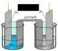
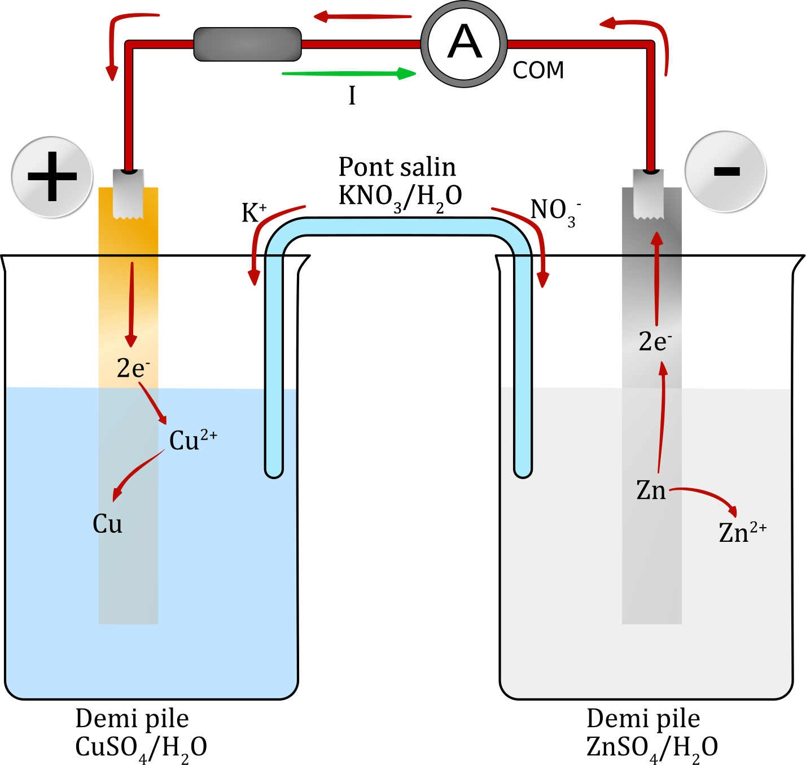
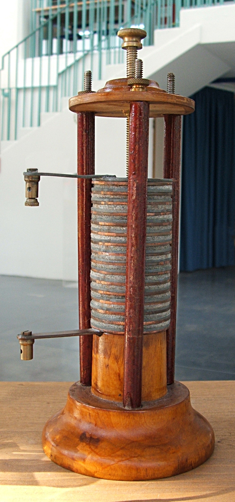
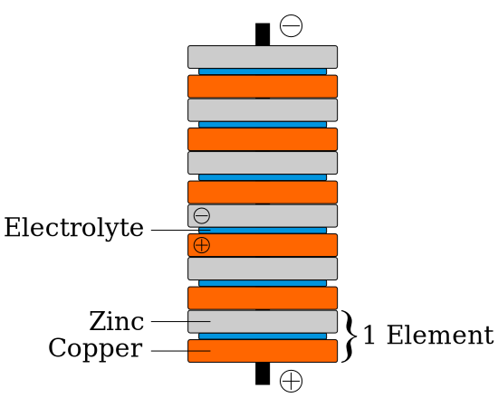
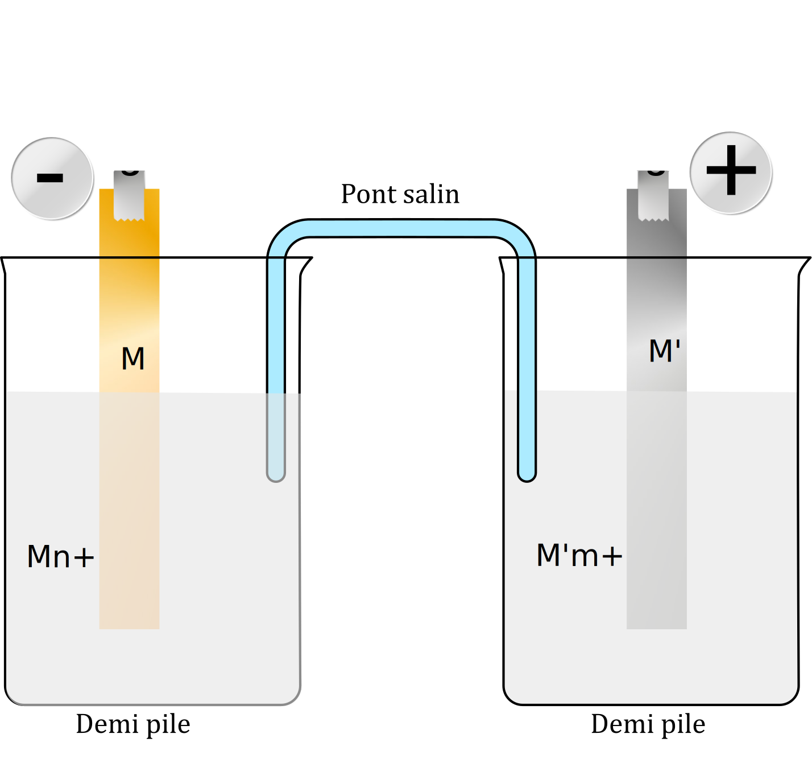

Transfert spontané direct d’électrons
Manipulations
- Dans deux tubes à essais, notés 1 et 2, verser quelques mL de solution aqueuse décimolaire de sulfate de cuivre (II) ;
- Dans le tube n°2, ajouter une pointe de spatule de poudre de zinc ;
- Boucher le tube à essais et agiter. Laisser décanter ;
- Filtrer le contenu du tube n°2 et noter la teinte de la limaille de zinc ;
- Comparer la teinte du tube n°1 (tube témoin) et du filtrat ;
- Ajouter dans les deux tubes quelques gouttes de soude (solution d’hydroxyde de sodium molaire) ;
- Observer.
Observations
- La limaille de zinc se recouvre d’un dépôt rouge.
- La solution du tube n°2 est beaucoup moins colorée que celle du tube n°1 (qui est toujours bleu). Elle est pratiquement incolore.
- L’ajout de la solution de soude dans le tube n°2 provoque la formation d’un précipité blanc.
- L’ajout de la solution de soude dans le tube n°1 provoque la formation d’un précipité bleu.
- Dans deux tubes à essais, notés 3 et 4, verser quelques mL de solution aqueuse décimolaire de sulfate de zinc (II) ;
- Dans le tube n°4, ajouter une pointe de spatule de tournure de cuivre ;
- Boucher le tube à essais et agiter. Laisser décanter ;
- Filtrer le contenu du tube n°4 et noter la teinte de la tournure ;
- Comparer la teinte du tube n°3 (tube témoin) et du filtrat ;
- Ajouter dans les deux tubes quelques gouttes de soude (solution d’hydroxyde de sodium molaire) ;
- Observer.
Observations
- Aucun dépôt n’apparaît à la surface du cuivre.
- Aucune des solutions ne voit sa coloration être modifiée.
- L’ajout de la solution de soude dans chaque tube provoque la formation d’un précipité blanc.
Exploitation
- Les ions cuivre $\ce{Cu^{2+} (aq)}$ forment avec les ions hydroxyde $\ce{OH- (aq)}$ un précipité bleu d’hydroxyde de cuivre (II) $\ce{Cu(OH)2 (s)}$.
- Les ions zinc $\ce{Zn^{2+} (aq)}$ forment avec les ions hydroxyde $\ce{OH- (aq)}$ un précipité blanc d’hydroxyde de zinc (II) $\ce{Zn(OH)2 (s)}$.
- La constante d’équilibre associée à la réaction entre les ions cuivre et le métal zinc a pour valeur : $K = \pu{1,9e37}$.
- À quoi servent les tubes à essais n° 1 et 3 ?
Réponse
Ce sont des témoins. Ils permettent par exemple de se souvenir de la coloration initiale de la solution avant l’introduction du second réactif.
- À partir des observations, indiquer si des réactions chimiques se déroulent dans les tubes à essais 2 et 4. Justifier la réponse.
Réponse
-
Aucune modification visible dans le tube n°4. L’ajout de soude provoque juste la formation d’hydroxyde de zinc (les ions zinc sont présents dès le début de l’expérience). On peut en conclure qu’aucune réaction chimique ne s’est déroulée dans le milieu.
-
De nombreuses modifications ont lieu dans le tube n°2 :
-
La décoloration de la solution laisse penser que la concentration des ions cuivre a fortement baissé, ce qui est confirmé par la non formation d’hydroxyde de cuivre lors de l’ajout de soude.
-
La formation du précipité blanc laisse penser que des ions zinc sont apparus dans la solution.
-
Au vu des conclusions précédentes, on peut aussi être amené à penser que le dépôt rouge à la surface du zinc pourrait être du cuivre.
On peut en conclure qu’il existe une réaction chimique dans le tube à essais n° 2.
-
- Si oui, préciser quels sont les réactifs et les produits de la réaction. Justifier la réponse.
Réponse
Il semble que les ions cuivre II réagissent avec le métal zinc pour former du cuivre et des ions zinc II.
- De quel type de réaction s’agit-il ?
Réponse
Il s’agit d’une réaction d’oxydoréduction.
- Quels sont les couples oxydant/réducteur dans les expériences 1 et 2 ? Écrire l’équation de la réaction.
Réponse
-
$\ce{Cu^{2+} / Cu}$ et $\ce{Zn^{2+} / Zn}$.
-
$ \ce{Cu^{2+} (aq) + Zn (s) <=> Cu (s) + Zn^{2+} (aq)}$
- Les résultats expérimentaux étaient-ils prévisibles à partir des données ci-dessus ?
Réponse
Pour prédire le sens d’une transformation, il faut comparer la valeur du quotient de réaction dans l’état initial à la valeur de la constante d’équilibre.
$$Q_{r,i} = \dfrac{\dfrac{[\ce{Zn^{2+}}]_i}{C^o}}{\dfrac{[\ce{Cu^{2+}}]_i}{C^o}} = \dfrac{[\ce{Zn^{2+}}]_i}{[\ce{Cu^{2+}}]_i}$$
A.N. $Q_{r,i} = \dfrac{\pu{0,10 mol.L-1}}{\pu{0,10 mol.L-1}} = \pu{1,0} < \pu{1,9e37}$
On pouvait donc prévoir une évolution du système chimique dans le sens de la réaction chimique d’oxydoréduction.
Transfert spontané indirect d’électrons
Manipulations
-
Introduire une lame de cuivre décapée dans un bécher de $\pu{100 mL}$ contenant $\pu{20 mL}$ de solution aqueuse décimolaire de sulfate de cuivre (II), $(\ce{Cu^{2+} (aq) + SO4^{2-} (aq)})$ ;
-
Introduire une lame de zinc décapée dans un bécher contenant $\pu{20 mL}$ de sulfate de zinc (II), $(\ce{Zn^{2+} (aq) + SO4^{2-} (aq)})$, à la même concentration ;
-
Relier les deux béchers par l’intermédiaire d’un pont électrolytique (pont salin) ;
-
Mesurer la tension $U_{\ce{Cu/Zn}} = V_{\ce{Cu}} - V_{\ce{Zn}}$ ;
-
Inverser le branchement et noter la valeur de la tension $U_{\ce{Cu/Zn}} = V_{\ce{Zn}} - V_{\ce{Cu}}$ ;
-
Brancher en série aux bornes de la pile un ampèremètre et un conducteur ohmique de résistance $R = \pu{10 Ω}$. Noter la valeur de l’intensité du courant débité ;
-
Retirer le pont électrolytique. Qu’observe-t-on ?
Observations
-
Il existe une différence de potentiel entre les armatures de cuivre et de zinc avec $U_{\ce{Cu/Zn}} > 0 \iff V_{\ce{Cu}} > V_{\ce{Zn}}$.
-
Un courant électrique circule de l’armature de cuivre jusqu’à l’armature de zinc, dans le cicuit électrique.
-
Lorsqu’on retire le pont électrolytique le courant électrique disparaît. Par contre, la différence de potentiel entre les armatures de cuivre et de zinc existe toujours. Elle est même plus grande.
Exploitation
-
L’électrode à laquelle se produit l’oxydation est appelée anode.
-
L’électrode à laquelle se produit la réduction est appelée cathode.
- Représenter sur un schéma annoté le circuit électrique pile - ampèremètre - conducteur ohmique. Indiquer le sens du courant électrique à l’extérieur de la pile et la valeur de son intensité.
Réponse
- Indiquer sur le schéma précédent le sens de circulation des électrons à l’extérieur de la pile. Les électrons peuvent-ils circuler à l’intérieur de la pile ?
Réponse
-
À l’extérieur de la pile les électrons circulent dans le sens opposé au sens du courant électrique. Ils circulent donc de la borne négative, l’électrode de zinc, vers l’électrode de cuivre.
-
À l’intérieur de la pile, on trouve des solutions aqueuses. Il n’est pas possible de trouver des électrons libres au sein d’une solution aqueuse, donc aucun électron ne circule dans la pile.
- D’où proviennent les électrons qui circulent dans le circuit électrique ?
Réponse
-
Aucun électron ne peut être créé par une réaction chimique. Les électrons qui quittent l’électrode de cuivre sont donc libérés par une réaction chimique.
-
La seule entité susceptible de libérer des électrons est le zinc puisque c’est un réducteur. On peut donc envisager la réaction d’équation : $$ \ce{Zn (s) –> Zn^{2+} (aq) + 2 e-} $$
- Que deviennent les électrons qui arrivent au niveau de l’électrode de cuivre ?
Réponse
-
Les électrons qui parviennent au niveau de l’électrode de cuivre ne peuvent pas entrer dans la solution et ne peuvent pas s’accumuler.
Les électrons sont donc consommés par une réaction chimique. -
La seule entité susceptible de consommer des électrons est l’ion cuivre puisque c’est un oxydant. On peut donc envisager la réaction d’équation $$ \ce{Cu^{2+} (aq) + 2e^ –> Cu (s)} $$
- Dans la situation étudiée on parle d’échange d’électrons entre le zinc et le cuivre de façon indirecte. Expliquer ce que l’on veut dire et écrire l’équation bilan de cet échange.
Réponse
-
Les atomes de zinc ne libèrent pas spontanément des électrons, ils n’existeraient pas sinon. Les atomes de zinc libèrent des électrons lorsqu’ils sont oxydés.
-
Les ions cuivre ne captent pas spontanément des électrons, ils n’existeraient pas sinon. Les ions cuivre captent des électrons lorsqu’ils sont réduits.
-
Le zinc est oxydé parce que le cuivre est réduit dans le même temps. Ces entités ne se rencontrent cependant jamais ; les électrons ne sont pas échangés directement lors d’une collision mais indirectement par l’intermédiaire du circuit électrique.
-
Équation bilan ; $$ \ce{Cu^{2+} (aq) + Zn (s) –> Cu (s) + Zn^{2+} (aq)} $$
- L’évolution constatée est-elle en accord avec les conclusions de la première partie ?
Réponse
On retrouve bien le sens d’évolution prédit et constaté dans la première partie du TP.
- Quelle électrode constitue l’anode de la pile ? Quelle électrode constitue la cathode de la pile ?
Réponse
-
L’anode est lieu de l’oxydation, c’est donc l’électrode de zinc.
-
La cathode est le lieu de la réduction. Cette dernière s’effectue au niveau de l’électrode de cuivre.
- Quel est le rôle du pont électrolytique ?
Réponse
-
Le pont électrolytique ferme le circuit électrique. Sans lui le circuit serait ouvert et les charges électriques ne circuleraient pas.
-
Le pont électrolytique assure l’électroneutralité des solutions.
- Reprendre le schéma de la question 7. et y ajouter toutes les entités microscopiques ainsi que leurs sens de circulation.
Réponse
- Les ions du pont électrolytique jouent-ils bien le double rôle qu’on leur a attribué à la question 13. ?
Réponse
-
Les ions potassium sont des cations. Leur sens de circulation est celui du courant électrique. Ils se dirigent donc du bécher contenant les ions zinc vers le bécher contenant les ions cuivre.
Ce sens permet de compenser, du point de vue électrique, la disparition des ions cuivre (des cations aussi) dans le bécher contenant le cuivre. Cette solution reste neutre électriquement. -
Les ions nitrate sont des anions. Leur sens de circulation est opposé à celui du courant électrique. Ils se dirigent donc du bécher contentant les ions cuivre vers le bécher contenant les ions zinc.
Ce sens permet de compenser, du point de vue électrique, l’apparition des ions zinc (des cations) dans le bécher contenant le zinc. Cette solution reste neutre électriquement.
- Une pile en fonctionnement est-elle un système dans l’état d’équilibre ou hors équilibre ?
Réponse
À partir du bilan chimique, on peut écrire : $$Q_{r,i} = \dfrac{\dfrac{[\ce{Zn^{2+}}]_i}{C^o}}{\dfrac{[\ce{Cu^{2+}}]_i}{C^o}} = \dfrac{[\ce{Zn^{2+}}]_i}{[\ce{Cu^{2+}}]_i}$$
A.N. $Q_{r,i} = \pu{1,0} < \pu{1,9e37}$
Le système évolue tant que $Q_{r} < K$, une pile en fonctionnement est donc un système hors équilibre.
Constitution d’une pile électrochimique
La première pile électrochimique : la pile Volta

-
Une pile est le siège d’une transformation chimique qui peut être globalement décrite comme la réaction spontanée indirecte entre le réducteur situé à l’anode et l'oxydant situé dans la solution à la cathode.
-
Une pile transforme donc de l’énergie chimique en énergie électrique qu’elle transfère au reste du circuit. Cette transformation n’est que partielle car, comme dans tout générateur, une partie de l’énergie libérée est dissipée sous forme thermique par effet Joule.
-
Le pont salin constitue une jonction électrolytique. Il assure la circulation du courant électrique et l’électroneutralité des solutions.
-
Chaque compartiment d’une pile est appelé une demi-pile. 
-
Schématisation formelle d’une pile : $$ \boxed{ \begin{array}{c c | c || c | c c} \ominus & \ce{M (s)} & \ce{M^{n+} (aq)} & \ce{M'^{m+} (aq)} & \ce{M' (s)} & \oplus \cr \end{array} } $$
- Donner la schématisation de la pile étudiée dans la section 2.
Réponse
$$ \boxed{ \begin{array}{c c | c || c | c c} \ominus & \ce{Zn (s)} & \ce{Zn^{2+} (aq)} & \ce{Cu^{2+} (aq)} & \ce{Cu (s)} & \oplus \cr \end{array} } $$
-
Deux compartiments distincts contenant chacun un couple oxydant/réducteur $\ce{M^{n+} (aq) / M (s)}$ et reliés par un pont salin constituent un générateur électrochimique appelé aussi pile.
-
L’ensemble constitué par une plaque du métal $\ce{M (s)}$ plongeant dans une solution contenant des cations $\ce{M^{n+} (aq)}$ constitue une demi-pile.
-
La plaque de métal est appelée électrode. C’est à sa surface que se produisent les transferts d’électrons.
Force électromotrice d’une pile
Un voltmètre électronique branché aux bornes d’une pile qui n’est connectée à aucun circuit électrique mesure sa force électromotrice $E$. La force électromotrice est donc la tension à vide de la pile).
- Remarque
- La tension aux bornes d’une pile en fonctionnement est généralement plus petite que sa force électromotrice.
Évolution spontanée d’une pile
-
Lorsqu’elle débite, une pile est un système hors équilibre.
-
Le critère d’évolution spontanée permet de déterminer le sens de déplacement des porteurs de charges dans une pile.
-
Une pile à l'équilibre est une pile « usée » qui ne peut plus débiter de courant : $$ Q_{r,eq} = K \qquad \text{et} \qquad I_{eq} = 0 $$
Comment décrire le fonctionnement d’une pile ?
Étapes à suivre pour décrire précisément le fonctionnement d’une pile
-
À partir de l’indication de l’ampèremètre ou du voltmère déterminer la polarité de la pile.
-
À partir de l’étape précédente, déterminer le sens de circulation du courant électrique.
-
À partir de l’étape précédente, déterminer le sens de circulation des électrons dans le circuit électrique.
-
À partir de l’étape précédente, déterminer la position de l’anode (lieu de l’oxydation).
-
À partir de l’étape précédente, écrire l’équation de la réaction d’oxydation qui se déroule à l’anode.
-
À partir de l’étape 3, déterminer la position de la cathode (lieu de la réduction).
-
À partir de l’étape précédente, écrire l’équation de la réaction de réduction qui se déroule à la cathode.
-
Sur un schéma indiquer le sens de circulation de toutes les charges électriques (électrons et ions).
-
Vérifier la cohérence des résultats avec le sens des ions dans le pont salin.
-
(Si l’exercice se poursuit avec une étude quantitative) Écrire l’équation bilan du fonctionnement de la pile.
-
Calculer le quotient de réaction et vérifier que le sens d’évolution déterminé correspond bien à celui prédit par le critère d’évolution.
- Donner toutes les étapes qui permettent de décrire le fonctionnement de la pile étudiée dans la section 2.
Réponse
On associe une demi-pile $\ce{Cu^{2+}/Cu}$ telle que $[\ce{Cu^{2+}}]_i = \pu{0,050 mol.L-1}$ à une demi-pile $\ce{Ag+/Ag}$ telle que $[\ce{Ag+}]_i = \pu{0,010 mol.L-1}$, à l’aide d’un pont salin au nitrate d’ammonium.
-
L’équation de la réaction d’oxydoréduction susceptible de se produire peut s’écrire : $$ \ce{2 Ag (s) + Cu^{2+} (aq) <=> 2 Ag+ (aq) + Cu (s)} $$ Sa constante d’équilibre vaut : $K = \pu{2,6e-16}$.
Prévoir dans quel sens va évoluer le système. -
En déduire les réactions aux électrodes et le sens de déplacement des porteurs de charges dans la pile lorsqu’elle débite.
-
Quelle est la polarité des électrodes ?
-
Faire un schéma de cette pile en précisant le sens de $I$ et le sens des électrons dans le circuit.
Réponses
-
$$ Q_{r,i} = \dfrac{[\ce{Ag+}]_i^2}{[\ce{Cu^{2+}}]_i \cdot C^o} $$ avec $ C^o = \pu{1,00 mol.L-1}$.
A.N. $Q_{r,i} = \dfrac{\left( \pu{0,010 mol.L-1} \right)^2}{\pu{0,050 mol.L-1} \times \pu{1,00 mol.L-1}} = \pu{2,0e-3}$
$Q_{r,i} > K$, le système évolue dans le sens inverse au sens d’écriture de l’équation de la réaction. Les réactifs sont les ions argent et le cuivre.
-
Il se produit donc :
- À l’électrode de cuivre une oxydation (anode) $$\ce{Cu (s) –> Cu^{2+} (aq) + 2e-}$$
- À l’électrode d’argent une réduction (cathode) $$\ce{Ag+ (aq) + e- –> Ag (s)}$$
Les électrons se déplacent, à l’extérieur de la pile, de l’électrode de cuivre vers l’électrode d’argent. Le courant circule en sens inverse.
Le courant électrique traverse donc la pile de l’électrode de cuivre vers l’électrode d’argent : ce qui correspond au sens de déplacement des cations, les anions se déplaçant en sens inverse.
-
À l’extérieur de la pile, le courant va de son pôle positif vers son pôle négatif. La polarité des électrodes s’en déduit : l’électrode d’argent constitue le pôle positif de cette pile et l’électrode de cuivre son pôle négatif.
Quantité d’électricité fournie par une pile
Faraday
La valeur absolue de la charge d’une mole d’électrons définit le faraday, de symbole $\cal{F}$ : $$ \cal{F} = \vert \cal{N}_A (-e) \vert $$ avec $\cal{N}_A$ la constante d’Avogadro et $(-e)$ la charge d’un électron.
On a donc $$ \pu{1 \cal{F}} = \vert \pu{6,02e23 mol-1} \times (\pu{-1,60e-19 C}) \vert = \pu{9,65e4 C.mol-1} $$
-
La quantité d’électricité $Q$ mise en jeu au cours du fonctionnement d’un générateur électrochimique est égale à la valeur absolue de la charge totale des électrons échangés : $$ Q = n(e^-)\, \cal{F} $$
-
Une pile, débitant un courant d’intensité constante $I$, pendant une durée $\Delta t$, fait circuler une quantité d’électricité $Q$ : $$ Q = I\, \Delta t $$
-
La capacité d’une pile est la quantité maximale d’électricité qu’elle peut fournir.
On réalise une pile mettant en jeu les couples $\ce{Ni^{2+} (aq)/Ni (s)}$ et $\ce{Zn^{2+} (aq)/Zn (s)}$ et évoluant dans le sens direct de l’équation de la réaction : $$ \ce{ Ni^{2+} (aq) + Zn (s) <=> Ni (s) + Zn^{2+} (aq) } $$ La masse de l’électrode de zinc diminue de $\pu{0,13 g}$ en 1h40min, l’intensité $I$ du courant étant constante.
Quelle est l’intensité $I$ du courant débité ?